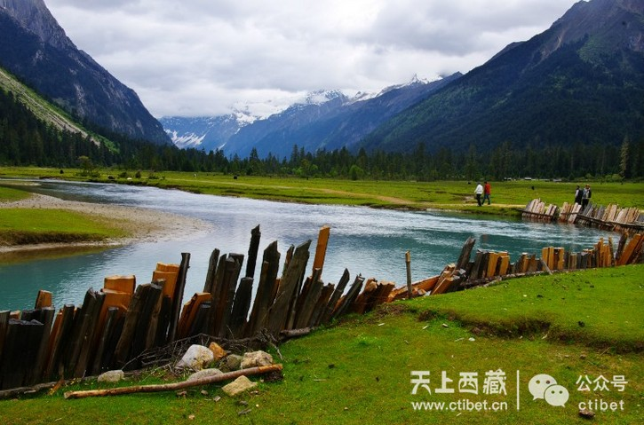
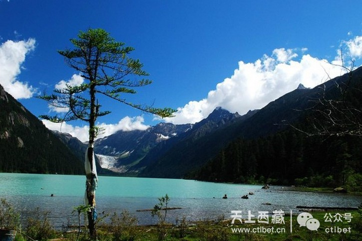
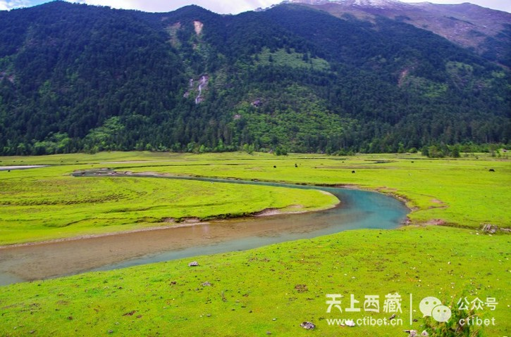
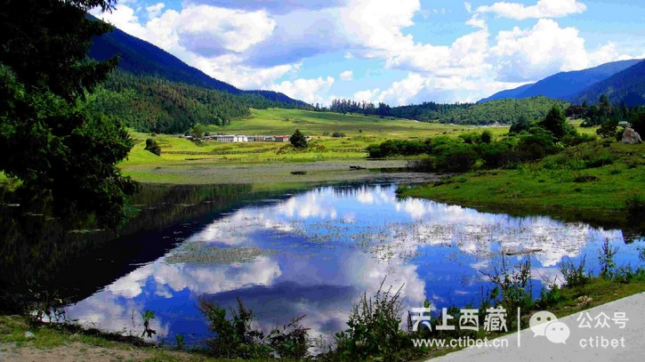

当前位置：游西藏 > 综合 > 巴松措景区不为人知的秘密——桑通草场与徒步新措
 爱上西藏 2016-06-03 15:12:27
爱上西藏 2016-06-03 15:12:27 106 0 13 0
106 0 13 0 导读：去西藏的人都知道巴松措，但也许匆匆一眼拍几张照片就过去了。看了这边文章，一定会有人惊呼可惜——如世外桃源般景象的地方，就藏在巴松措景区里，但却没有几个人知道……
   秘密Ⅰ：桑通草场
在巴松措大景区里面隐藏着一处鲜为人知的地方，那就是桑通草场。有人说，通往桑通草场的路是让人痛苦的，但看到桑通草场的时候，一路的颠簸都不算什么。那里有高山，有原始森林，有瀑布，有牦牛，有木屋……所有一切你能想象到的世外桃源的景象，这里都有。
秘密Ⅱ：徒步新措
新措，对于很多人来说仍是一个陌生的地方。它就藏在桑通草场的后面。从桑通草场下车后，需要徒步一段距离，才能揭开新措神秘的面纱。
“新”在藏语中是“木头、树”的意思，新措即指像一棵倒下的树形状的湖。也有人说，之所以叫“新措”，意思便是“新发现的湖”。知道它的人还很少，想来需走路两小时以上才能抵达也阻挡了相当一部分景点游热衷者。但凡了解的人都会说：新措之美太值得去徒步露营。而且，这世上的路若都是平路，也根本不会体验到徒步那份先苦后甜的酣畅舒怀。
这真是一条完美的徒步路线，景色丰富多彩。在7、8月份，这里是一片湿地，很长一段路程要蹚水而过。而如若在5、6月份，路则极好走，甚至不用穿登山鞋，只需一双合脚的旅游鞋就可以应付，很适合刚入门的新手或是带着孩子来体验行走的快乐。
当然，如果对自己的体力没有信心，也可以在桑通草场出发的地方租一匹马载着你。帅气的当地小哥会帮你掌握缰绳，控制马的速度和方向。
你不用担心迷路，因为在这广袤的草场只有这一条路，路尽的地方便是桥，过了桥又有路自然衔接。周遭的风景实在太美了，遥遥的山坡下，你可能会看到一棵开花的树和卧于其旁的一头牦牛；或是一条清澈的河流，一匹白马蹚水而过……眼睛所及，处处都是一幅完美的画卷。
秘密Ⅲ：老阿妈
桑通草场边，矗立着一个木房子，与旁边的木头桥一起，不由让人想起了“小桥流水人家”的诗意。这个木屋很宽敞，屋子被几根树桩支起来，离地面大概半米高。顺着门口的木梯子就可以进到屋子里。
屋子里有一大堆篝火，篝火的四周有一圈可以坐人的台子。篝火上架着一个大水壶，等到壶里的水烧开时，老阿妈便会把水壶拎起来，给坐在篝火旁边的人冲茶、加水。
这位老阿妈有些瘦弱，拎起水壶的时候有些吃力。有小伙子主动要帮她拿的时候，她却摆摆手谢绝了。如果早上走得急，没来得及吃饭，还可以在老阿妈这里买碗方便面。围着篝火吃着方便面，这一刻，就算是山珍海味似乎都比不上这简单而幸福的滋味。
有位去过桑通草原几次的朋友说，每次去，都要去老阿妈家的篝火堆旁边坐一坐，买杯茶喝。要不然，总感觉这一趟旅程不完整，少了点什么。老阿妈家里的茶就是普通的清茶，没有什么名贵的茶叶，甚至连喝茶的器皿都需要自备，但是却让人觉得格外的香。
交通
从拉萨驱车，顺拉萨河而行，翻越米拉山口后，便开始沿尼洋河前行，直到到达工布江达县的巴河镇，再驱车一小时至结巴村，或者也可到巴松措度假村住宿休整。结巴村有当地藏胞自营的家庭客栈，工布风情浓郁，主人们有着单纯、热情的待客之谊，进门先可品尝到道地的酥油茶。到一个地方，要喝当地的水，让五脏六腑都感染一下天地空气间的振动，让它走过一遭，在身体内流淌，与细胞记忆交融。如果主人家邀请你一起跳起了锅庄，可不要害羞，尽情跳吧！跳得好不好是一回事，放空头脑，让手指腿脚伸展开来，允许自己重新成为一个开心玩乐的孩童，由心而发的快乐永远比姿势和技巧更重要。
巴松措景区门口有通往桑通草场的班车，班车会沿着湖边走一段，然后在一个岔路口处拐到一条土路上，从这便开启了前往桑通草场的短途旅行。通往桑通草场的路并不平坦，一路上随时都可能在车里体验一下被弹“飞”的失重感。
但是道路两边的景色还是很赞的。你会看到宽阔的河流、挺拔的树木，偶尔会经过几户人家，看到在自己家门口玩耍的小孩，看到有车经过，他们会热情地摆手打招呼。稚嫩的脸上挂着纯真的笑容，笑容里蕴含着融化一切冰雪的力量。
到桑通草场的车程大约1个小时，在这段时间里，你会经过不同的景象，每个转弯处就会发现意想不到的惊喜。这个时候，你仿佛失去了知觉，再也感觉不到被颠簸的痛苦，只恨相机快门不够快，没办法记录下那些漂亮而惊艳的瞬间。
车子拐过几个弯，在经过一座桥，就到了桑通草场。在下车的那一瞬间，你会觉得眼前的那片绿色是世界上最漂亮的颜色。这里的草像是一片柔软而舒适的地毯，恨不得光着脚在上面感受一下，哪怕沾到牛粪、羊粪也是舒服的。
有人说，看到桑通草场，就会有奔跑、打滚、撒野的冲动，拍照时，也不会嫌弃那单一的绿色。
桑通草场
让人撒野的地方
一条完美的轻徒线路
TIPS
去往新措的徒步线路属于轻徒，即徒步线路路程短、路况比较好，但就算是轻徒也要提前做些准备：
1、衣物一定要舒适，冲锋衣最好，能挡风遮雨；因为徒步线路上难免会遇上天气不好，下雨、下冰雹的情况，如果可以的话，最好带上雨衣。
2、鞋子一定要选适合走路的鞋子。
3、如果可以的话，带上登山杖，它可以给你省掉不少力气。不过没有也别慌，可以随地捡根树枝代替登山杖。
4、路上可以带一些食物以补充体力，另外，如果你的肠胃比较敏感，不宜多饮用溪水的话，建议最好带上水。
5、喜欢拍照，可以带一些简单的摄影器材，因为沿途美景很多，但是如果是第一次徒步的话，那种高大上的摄影器材就别带了，会很耗费体力。
(转载自西藏商报，作者/郭翠雯 习淑祎，原文有删减)
编辑：李冬